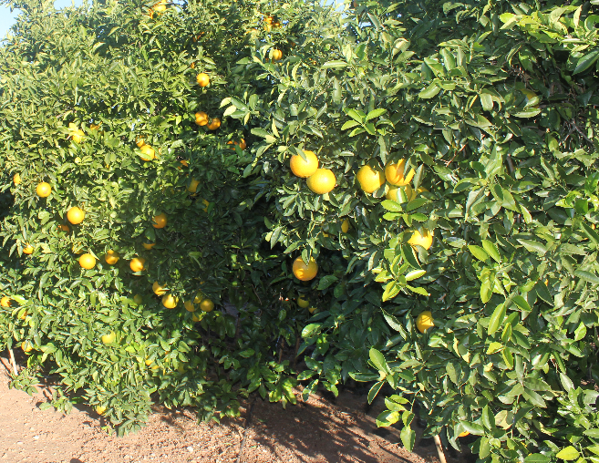
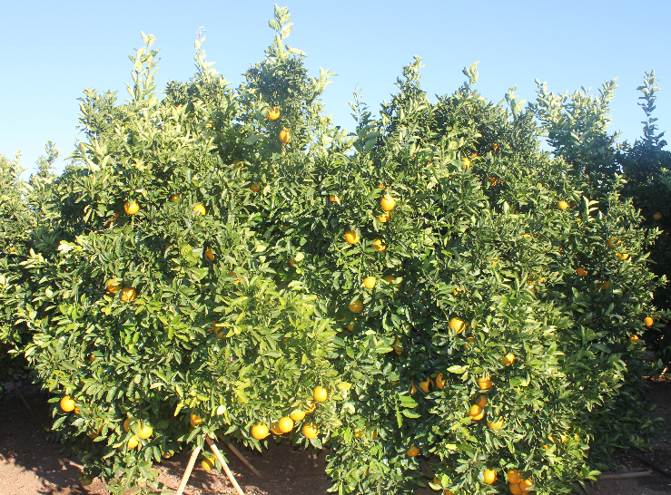

Llevamos mucho tiempo hablando de las grandes beneficios que aportan a nuestra salud los cítricos y sus flores. Hoy queremos incidir en otras virtudes de los naranjos: las estupendas propiedades que poseen sus hojas. Sí, habéis oído bien. Las hojas tienen un aroma inconfundible y cuentan con unas sustancias muy efectivas para ganar la batalla a los nervios y al insomnio. Quizá muchos de vosotros habéis crecido viendo a vuestras abuelas usar las hojas del naranjo para relajarse e incitar el sueño antes de acostarse. Ellas ya conocían a la perfección los fines medicinales que posee esa infusión.

La elaboración es muy sencilla. Tan sólo tenéis que hervir durante cinco minutos las hojas frescas. El sabor puede ser algo amargo, así que podéis añadir un poco de azúcar o miel con un poco de hierbabuena. Eso sí, se debe utilizar una mayor cantidad que con las flores de azahar, porque la concentración es menor. Sus propiedades sedantes e hipnóticas son perfectas para conciliar el sueño y calmar los nervios acumulados durante el día. En realidad, las hojas del naranjo cuentan con las mismas propiedades que las flores del azahar, con la diferencia de que las hojas las tenemos a mano durante todo el año.
Una vez hecha la infusión lo ideal es tomarla una media hora antes de irse a dormir, para que haga efecto adecuadamente.
Otros poderes curativos
Las hojas poseen unas efectivas sustancias que ayudan a mejorar nuestra salud, sobre todo los problemas digestivos de todo tipo (generados por una mala digestión, gases, estrés, etc). Pero también proporciona una solución en casos de epilepsia y situaciones de histeria, cuando el corazón palpita demasiado rápido o cuando necesitamos fortalecer el sistema inmunológico o bajar la fiebre. Con la misma eficacia, calma los dolores de cabeza causados por el estrés, y pueden incluso ser usadas en casos de gripe, congestión y dolor de garganta. Incluso es de gran ayuda para aquellas personas que tienen niños que han perdido el apetito, en este caso lo mejor es darles una infusión en ayudas durante varios días.

En LaMejorNaranja no nos cansamos de subrayar los incontables beneficios que poseen los cítricos y su árbol, un bienestar que nos proporciona una mayor calidad de vida y una salud en forma.


Las infuciones y remedios caceros ( como se decia antes recuerdos de mi abuelita )
Carlito buscame unas hojas de naranja para hacer un cocimiento para la toz.
-buscame unas hojas de yerba de limon para la gripe.
-como tambien recuerdo que se usaba mucho la albaca,salbia,yerba buena, menta,sabila, etc.etc.
Hola necesito saber si es que se puede tomar con leche y como se prepararía gracias excelente página. Pd venden en gotas o no? Y de ser así que es mejor gotas u hojas y donde comprar las gotas .muchas gracias.
Hola Ximena, no creemos que haya ningún problema en mezclarlo con leche, pero no lo hemos probado nunca. En cuanto a las gotas, desconocemos si se venden.Muchas gracias por leernos 🙂
Querida Ximena
No hay problema si lo tomas con leche yo lo tomo con leche para café esta riquísimo de ese modo . Y con mucho beneficio para el insomnio .
Holaaa puedo tomar las hojas de naranjo estando embarazada??? Ando muy nerviiosa con angustia y me cuesta dormir tengo 8 meses de gestacion ,
Hola Genesis, es mejor que consultes con tu ginecólogo, ya que nosotros no tenemos conocimientos suficientes para asesorarte. Gracias por leernos! 🙂
hola tengo diabetes y hipotiroidismo y presion alta puedo tomar el te de ojas de naranjo mil bendiciones
Hola Rita, aunque estamos hablando de productos naturales, en temas de salud siempre recomendamos que consultéis con un médico antes. Nosotros no podemos asesorar sobre temas médicos. Saludos y gracias por leernos! 🙂
Hola quiero saber si hacer baños con el agua de hojas de naranjo a niños ayuda a mejor los resfriados
Gracias
Hola Esmeralda, no tenemos constancia de ello, te recomendamos que preguntes a tu médico de cabecera, ya que en temas de salud y más con niños es mejor acudir a un profesional. Saludos
Hola Carmen, mi pregunta es si se puede preparar un par de litros de una vez para todo el día? Tengo un hijo autista de 15 años y ha estado muy alterado e insomne…
Hola Francisca, claro que sí, puedes prepararlo en una botella grande y guardarlo en el frigorífico. Espero que le vaya bien! 🙂
Buenos días Carmen. Ultimamente me cuesta bastante dormir bien, y buscando por internet algún remedio casero para el imsomnio, me he encontrado con tu artículo y con este otro http://www.como-sembrar.info/beneficios-y-propiedades-de-la-lechuga/ donde hablan de un té de lechuga.
Mi pregunta es si ¿es aconsejable utilizar ambos métodos a la vez? Es decir, tomar la infusión de lechuga y la de naranja el mismo día.
Muchas gracias, saludos.
Hola Sonieta, al tratarse de infusiones naturales no creo que haya ningún problema, pero de todos modos, para temas de salud siempre recomendamos que acudáis al médico, ya que el insomnio puede ser debido a algún trastorno en el organismo y es el especialista el que debe aconsejarte sobre las pautas a seguir. Saludos!
Hola por q me sabe la de hojas de naranjo agrio como a clorofila esto es malo
Hola Maye, lo sentimos pero nosotros no cultivamos naranjas amargas, por lo que no te podemos ayudar ya que desconocemos esta variedad de naranjos. Saludos.
Buenos quiero saber si se pueden mezclar las hojas de naranjo con valeriana gracias
Hola Maye, en principio no hay ningún problema en mezclarlas. Saludos!
Dicen que son buenas para dormir,pero luego las contraindicaciones te pone que te aumenta el ritmo cardíaco y la tensión,no lo entiendo??,!!si es bueno para dormir tendría que no afectarte al corazón o tension,no??
Hola Encarni, en caso de que se tengan problemas de corazón o de tensión es cuando no debería tomarse la infusión sin consultar antes a un médico. Saludos
Buenas tardes..
Gracias por tan excelente pàgina
Actualmente estoy consumiendo el té de las hojas de naranjo con hojas de guanabano…me ha servido mucho para nervios , conciliar el sueño y para el estrés ….mi pregunta es, si para una persona que tiene problemas de presión alta puede consumirla , aún si está tomando pastillas para hipertensión?
Hola Claribeth, nos alegramos mucho de que te guste nuestra web. En cuanto a tu pregunta, sería mejor que lo consultaras con un médico. En temas de salud es mejor acudir a un profesional. Saludos
Ola disculpe tengo una persona q padese de mucho estres ya ha ido con los doctores y pues no hacen efectos los medicamentos y me dijieron de este remedio y quisiera saber si puede beber el te durante el dia?? Espero su respuesta en verdad es necesaria gracias !!!
Hola Brunilda, en principio no hay problema en tomar el té durante el día, pero debería consultarlo con un médico. Saludos.
Hola buen día, mi pregunta es como se debe de tomar el te para una persona de 79 años, para que pueda dormir, cuantas hojas son? Y cuantas veces al día?
Hola Guadalupe, la cantidad de hojas de té que hay que poner en la infusión depende de cada persona. Puedes empezar con unas pocas e ir aumentando paulatinamente hasta que haga efecto. Saludos
sufro de insomnio y tomo melatonina yo pregunto si puedo tomar el te o si tengo k suspender la melatolina para poder tomar el te gracias
Hola Claribel, gracias por leernos. En cuanto a tu duda, es mejor que lo consultes con un médico. Saludos.
Sufro de depresion severa y tengo medicamentos para el imsonio, me gustaria saber si puedo usar el te de naranja junto con los medicamentos.
Hola Lucy, si sufres insomnio no deberías tomar té, ya que la teína puede agravar el problema. Para tu caso, si no quieres renunciar a tomar té, te recomendaría el té rooibos que no contiene teína, o las infusiones de hoja de naranjo también te podrían ir muy bien. De todos modos, siempre indicamos que en estos casos debe ser un médico quién os dé las pautas a seguir y si es bueno tomarlo o no. Gracias por leernos. Saludos!
Tengo una duda, las hojas no tienen propiedades citricas verdad?
Ya que estoy prohibiodo de todo citrico =( .
Hola Jonathan, yo diría que no, pero mejor que lo consultes con un médico.
Mi pregunta es; si es malo consumir el te de naranja por mucho tiempo.. oh cuanto tiempo se puede consumir el té.. yo bebo dos tazas de té por las noche. Es correcto eso
Hola Jose Ernesto, el té es muy bueno para la salud, pero todo en abundancia puede ser perjudicial. Mejor consulta con un médico la cantidad de té que consumes y él te asesorará mejor que nosotros. Saludos!
MUCHISIMAS GRACIAS POR SU APORTE, YA HASTA ME HICE ADICTO AL TE DE HOJAS DE NARANJO, TODOS LOS DIAS ME VOY A ROBAR 2 O 3 HOJAS DE UN ARBOL Q ESTA EN UNA JARDINERA EN UNA BANQUETA DE MI COLONIA, UN TE MUY RICO Y MAS RICO EL EFECTO, ¡¡¡MUCHISIMAS GRACIAS!!! ME FALTA TENER MI PROPIO ARBOL!!!
Hola Joel, ¡nos alegramos mucho que te haya ido tan bien la infusión! Gracias por leernos y seguir nuestros consejos! 😉
Muchas gracias por este maravilloso consejo. Soy un fan de los remedios naturales. Pienso que es mucho mejor que tomar pastillas sintéticas que tarde que temprano generan más mal que bien. Muy buena esta página. Un saludo!
Muchas gracias Juan Gutiérrez, nos alegramos de que nos leas y te guste nuestro contenido! Saludos
Puedo usar los tallos también?
Hola Rene, te recomendamos que uses sólo las hojas porque son las que tienen las propiedades. Saludos!
Tiene k ser naranja agria o dulce
Hola Marta, nosotros sólo tenemos naranjas dulces, pero imagino que pueden servir también las hojas de naranjo amargo. Saludos.
¿Cuantas hojas se deben hervir?
Gracias
Hola Ángela, lo normal es poner unas 3 o 4 hojas, aunque depende de gustos y de la cantidad de agua que pongas. Saludos!
Hola. Le estot dando esta ifusion a mi bebe de cuatro meses. Hay alguna contraindicaion? Es malo darsela todos los dias o debo ir alternando?
Gracias.
Hola Loreto, te recomiendo que lo consultes con tu pediatra. La alimentación de los bebés es muy delicada y hay que ir introduciendo los alimentos poco a poco. Lo mejor es que sigas las recomendaciones del pediatra. Saludos
Hola estoy consumiendo las hojas en infusión por las noches, y tengo una duda, consegui suficientes para un tiempo, pero pasa que ya se están secando y quiero saber si al hacer la infusión con hojas secas dejan de surtir efecto¿?… mi siguiente duda es si tomarla por mucho tiempo esta contraindicado por algún motivo, sufro de ataques de panico, me cuesta mucho conciliar el sueño, pero no se si se deba usar prolongadamente, espero puedas resolver mis duda, muchas gracias
Hola Lina, en primer lugar muchas gracias por leer nuestro blog. Repecto a tus dudas, las hojas de naranjo, aunque se sequen siguen manteniendo sus propiedades. En cuanto a lo que nos comentas sobre los ataques de pánico, es mejor que consultes con tu médico. Las hojas de naranjo ayudan a conciliar el sueño y son relajantes pero cuando hay problemas de salud asociados es mejor que pidas ayuda a un especialista. Saludos
¿Saben la receta para hacer el té de hojas de naranjo? ¿O dónde puedo encontrarla?
Hola Ana Laura, sólo tienes que hervir durante cinco minutos las hojas frescas de naranjo. Dejar reposar durante unos minutos y añadir miel o azúcar al gusto. Saludos
Muy excelente página web, gracias por compartir, soy un amante de las costumbres naturales, es decir del consumo de la producción de la naturaleza; frutas, hierbas, granos, etc…
Hola José, muchas gracias a ti por leernos y dejarnos este comentario. Un saludo